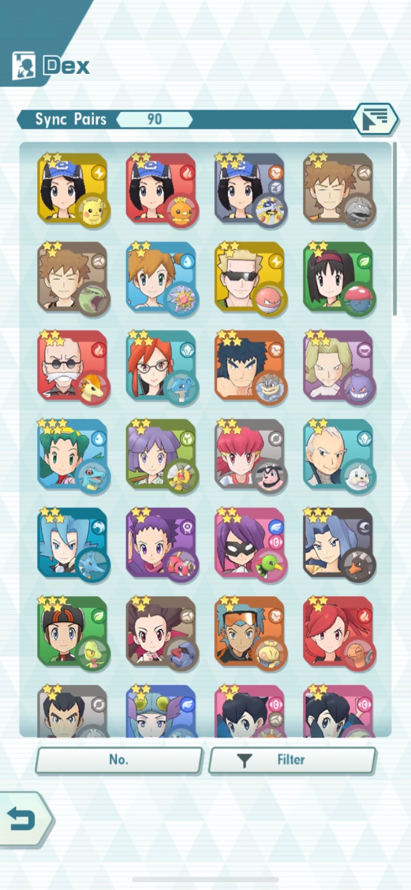
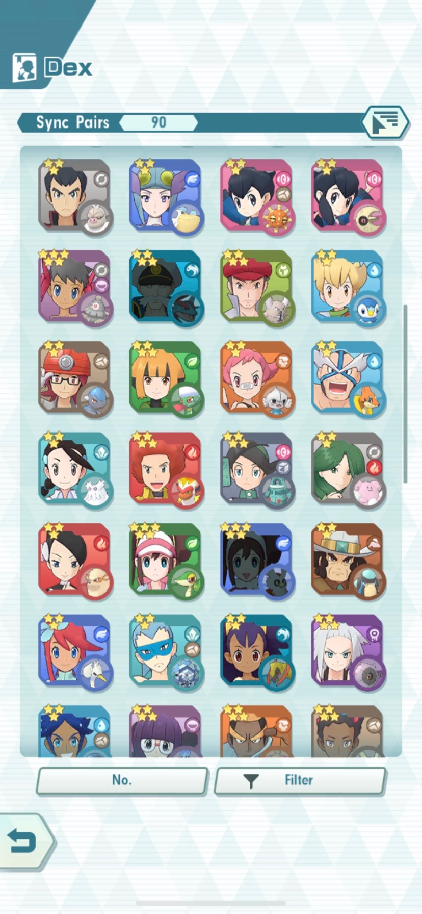
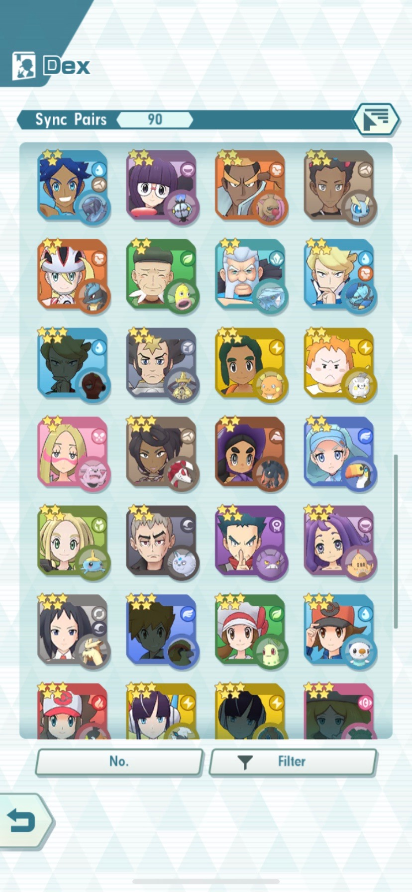
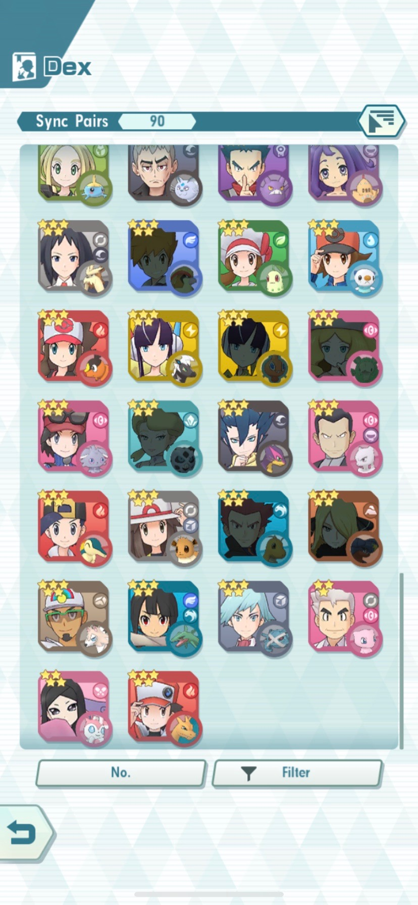

PERSONAL CONNECTIONS
I started playing this game a few months after it was released, and I have to say that it is very fun. The main reason why I like this game so much is that even though this game may seem "Pay to Win," the developers have made the game possible for a person like me, who does not spend money on in-app purchases, able to get some of the rarer 4 and 5 star Sync Pairs. Speaking of the developers, they are some of the only game developers I know who actively scour the communities of their game to find what people are discontent with, so they can improve their game.
   Here are all the Sync Pairs I have (the ones that I'm missing are grey)
As you can see, I have a lot of Sync Pairs, but I do have favourites. My favourite type of Sync Pair is the Special Striker, because they tend to be pretty powerful, and I like them slightly better than Physical Strikers, because Physical Strikers can often be countered by Physical damage-reducing moves. With that said, here are some of my favourite Sync Pairs of each type (in no particular order):
- Special Striker: Siebold and Clawitzer- This Sync Pair is quite useful, as it has a move that never misses (Aura Sphere), and although it doesn't have much Defense/Health, it can heal itself while making sure its next attack is a critical hit (using The Definition of Art!)
- Physical Striker: Olivia and Lycanroc- Even though I tend to dislike Physical Strikers as they tend to be quite boring in terms of gameplay, I have always liked this Sync Pair. Their "Stone Edge" can do so much damage, and when its boosted with their "Hard as Diamonds!," which increases their accuracy and Crit-Hit rate, it can do damage that even a Super Effective hit by a Special Striker.
- Support: Phoebe and Dusclops and Liza and Lunatone- I can't decide which one I like better out of the two Sync Pairs, as Phoebe has a very unique playing style, and Liza is just overpowered. Phoebe and Dusclops can boost their allies' critical hit rates with a "Dire Hit All +," but that's not the most unique part. Pheobe and Dusknoir have this move called "Unbreakable Bonds," which raises their allies'(and also this Sync Pairs') Attack, and Move Gauges. The amount that the Attack and Move Gauge are raised by depends on how low the Sync Pair's health is. It just so happens that the Pair have a move called "Double Edge," which deals recoil damage to the use. This means that if you lower your health enough with this move, you can use "Unbreakable Bonds," and then if you are in a Co-Op battle, you can stay out until you faint, which will transfer half of Phoebe and Dusknoir's raised stats to the Sync Pair you transfer in.
- I like Liza and Lunatone because they have a very powerful move: "Of One Mind!" which boosts both the Special and Physical Attacks of all allied Sync Pairs. They also have the "X Sp. Def All," which raises the Special Defense of all allied Sync Pairs, which I find to be more useful than "X Defense All," which boosts Defense. Liza and Lunatone also have the move "Confusion," which is quite useful when one has some Move Slots to spare, as it has a chance of Confusion.
- Tech: Koga and Crobat- I tend to not like Tech Sync Pairs very much, but if I had to choose one, I would go for this Sync Pair. They Lisa, Shris, Phoebe, Barry, Gardenia, Sie Sie